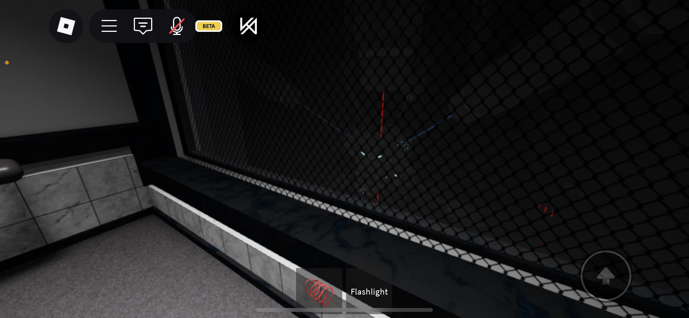

Description for IMG_4833.png
Here is a detailed description of the image:
General Impression
The image appears to be a screenshot from a video game, likely on a mobile device due to the on-screen controls. The scene depicts a dark, enclosed space with a chain-link fence covering a window or opening. The overall mood is somewhat ominous and suggests a confined or possibly restricted area.
Visual Elements:
• Environment: The scene is mostly black and gray. The visible area includes a portion of a wall with tiled sections and a gray floor.
• Fence: A prominent feature is the black chain-link fence filling a large portion of the background. It creates a sense of separation and obstruction.
• Light Sources: There are faint blue and red lights visible through the fence, suggesting activity or structures beyond.
• UI Elements: The screenshot includes elements of the game's user interface (UI). At the top, there are icons for various functions (Roblox logo, menu, chat, mute, beta indicator). At the bottom, there's a "Flashlight" icon and a control for movement.
Details and Observations:
• The interior space looks clinical or institutional, perhaps a prison cell, laboratory, or holding area.
• The chain-link fence suggests security or confinement.
• The faint lights visible through the fence hint at something unknown or unreachable outside.
• The presence of the flashlight control implies that the player is likely navigating in the dark.
Potential Interpretation:
The image conveys a sense of being trapped, isolated, and possibly in danger. The darkness, the fence, and the faint lights create a feeling of mystery and tension. The UI elements indicate that the player is actively exploring this environment.
In summary, it's a screenshot that evokes a sense of unease and anticipation, common in many mystery or survival-horror games.
